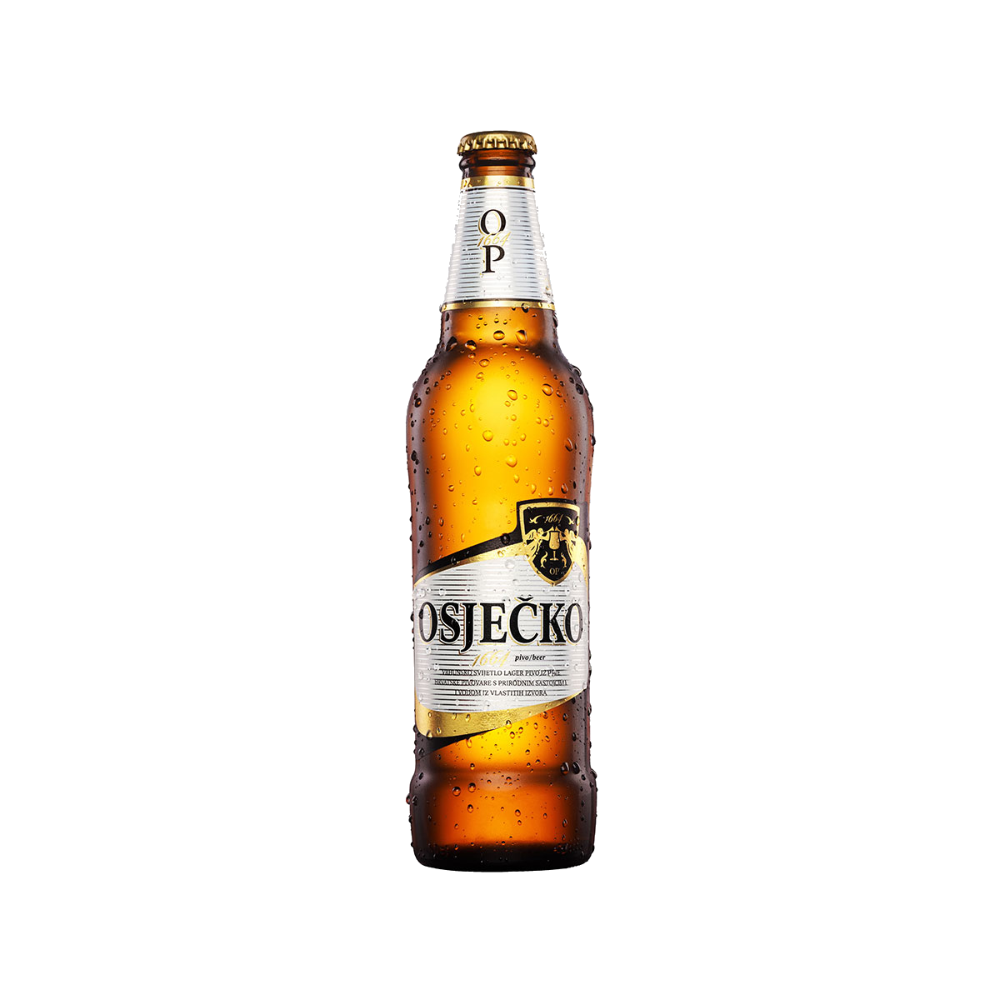
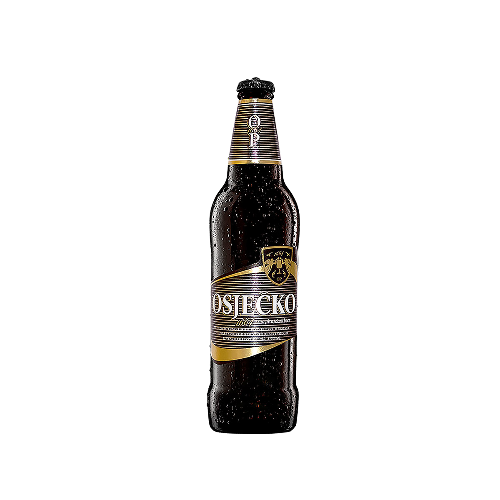
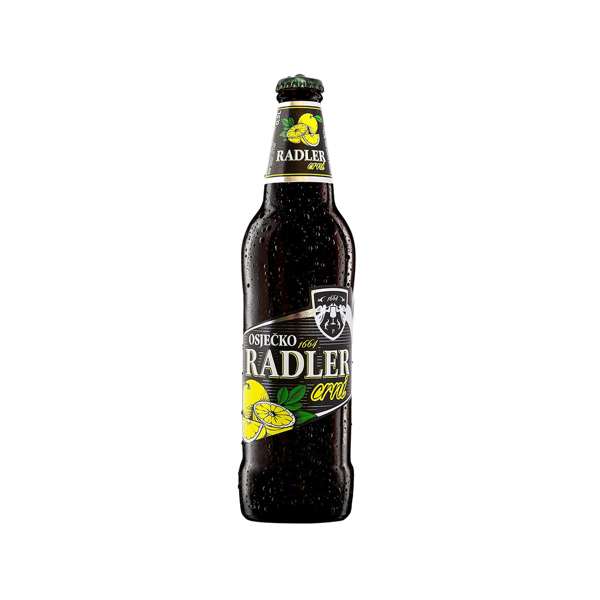

Osječko svijetlo pivo je lager pivo svijetlozlatne boje s određenim dodatkom gorčine.
Sadrži 11,8% ekstrakta te 4,5 % alkohola.
Osječka pivovara pakira ga i toči u boce od 0.25 l, 0.33 l i 0.5 l, u limenke od 0.33 l i 0.5 l, PET ambalažu od 1 l i od 2 l.
Crno Pivo

Crno pivo sadrži 12% ekstrakta i 4,5% alkohola. B
ogato je hranjivim sastojcima te blago smećkaste je boje.
Nakon proizvodnje istoga, toči se u limenke, bačve i boce.
Crni Radler

Osječko pivo Crni Radler mješavina je limunade i crnog piva.
Kao i obični Radler, i ovo pivo ima mali postotak alkohola (2%).